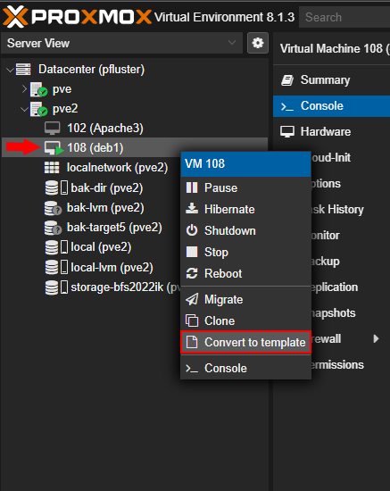
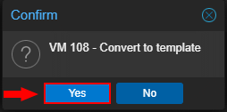

Der erste Schritt ist das Erstellen einer VM oder eines LXC Containers.
Nachdem die Maschine so konfiguriert hat wie man es möchte (z.B. Webserver,Entwicklungsserver,...) muss
man einige Befehle ausführen:
Dann kann die Maschine konvertiert werden.
 Dazu klicken Sie mit der rechten Maustaste auf die gewünschte Maschine und wählen 'Convert to template'. Bestätigen sie mit 'Yes'. Nach einiger Zeit erscheint das Template im Node. Die Maschine ist jetzt bereit zum Klonen
Nach dem Klick auf "Clone" beginnt der Klonvorgang.
Der Name muss geändert werden. Außerdem kann man das Node und die ID ändern.
Wenn man alle Einstellungen überprüft hat wird der Vorgang mit einem Klick auf 'Clone' abgeschlossen.
Nach dem Starten der Maschine müssen nochmals Befehle ausgeführt werden:
falls ssh insterliert ist: